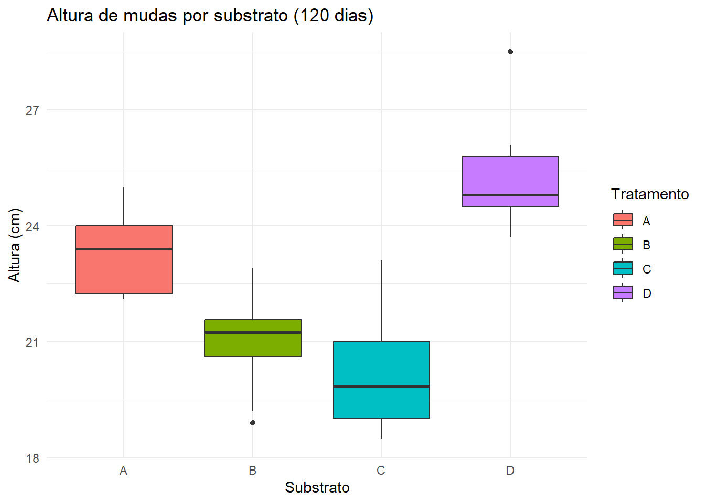

7📖 Capítulo 5 – Comparações Múltiplas e Contrastes Planejados
7.1 🌱 Narrativa aplicada
Um viveiro de mudas nativas precisa decidir se vale a pena adotar um novo substrato adubado.
As opções vigentes são: A e B (comerciais) e C (alternativo de baixo custo). O D é o alternativo adubado.
Queremos responder perguntas práticas do gestor, não apenas listar todos os pares diferentes.
Dica
💡 Ganho de usar contrastes planejados: foco em hipóteses relevantes, maior poder estatístico e clareza para a decisão (evita dezenas de comparações sem interesse prático).
7.2 🎯 O experimento (DIC)
Espécie: Cedrela fissilis (cedro-rosa)
Local: viveiro experimental (bandejas de tubetes 55 cm³)
Fator/Tratamentos: 4 substratos → A, B (comerciais), C (alternativo), D (alternativo + adubo)
Unidade experimental: muda em tubete
Repetições: 8 mudas por tratamento (total = 32)
Variável resposta: Altura_cm aos 120 dias pós-semeadura
📦 Dados desta análise
- dados/substratos_contrastes.csv(arquivo desta apostila)
- No Colab: /content/substratos_contrastes.csv
- No Quarto local: dados/substratos_contrastes.csv
\(Y_{ij}\): altura da j‑ésima muda no i‑ésimo substrato.
\(\mu\): média geral; \(\tau_i\): efeito do substrato.
Contraste planejado: combinação linear com coeficientes que somam zero.
Ex.: \(L_1 = \tfrac{1}{2}(\mu_A + \mu_B) - \mu_C\) (comerciais vs alternativo).
7.4 💻 Análise no R
Código
library(readr); library(dplyr); library(ggplot2)# Quarto local:dados <-read_csv("dados/substratos_contrastes.csv", show_col_types =FALSE)# Colab:# dados <- read_csv("/content/substratos_contrastes.csv", show_col_types = FALSE)# Garantir a ordem A,B,C,D para casar com os contrastesdados$Tratamento <-factor(dados$Tratamento, levels =c("A","B","C","D"))# ANOVAmod <-aov(Altura_cm ~ Tratamento, data = dados)summary(mod)
Df Sum Sq Mean Sq F value Pr(>F)
Tratamento 3 131.06 43.69 21.8 1.74e-07 ***
Residuals 28 56.11 2.00
---
Signif. codes: 0 '***' 0.001 '**' 0.01 '*' 0.05 '.' 0.1 ' ' 1
Código
# Gráfico exploratórioggplot(dados, aes(Tratamento, Altura_cm, fill = Tratamento)) +geom_boxplot() +theme_minimal() +labs(title ="Altura de mudas por substrato (120 dias)",x ="Substrato", y ="Altura (cm)")

7.5 🎯 Por que contrastes e não apenas Tukey/Duncan?
Tukey/Duncan comparam todos os pares → bom para um panorama, mas produzem muitas comparações irrelevantes.
Contrastes testam hipóteses a priori (definidas antes do experimento): mais foco e maior poder para aquilo que realmente importa.
7.6 🔬 Contrastes planejados no R (multcomp)
Código
# install.packages("multcomp") # se necessáriolibrary(multcomp)# Matriz de contrastes: linhas = hipóteses (na ordem dos níveis A,B,C,D)K <-rbind("Comerciais vs Alternativo"=c( 0.5, 0.5, -1.0, 0.0),"Adubado vs Outros"=c(-1/3, -1/3, -1/3, 1.0))contr <-glht(mod, linfct =mcp(Tratamento = K))summary(contr)
Simultaneous Tests for General Linear Hypotheses
Multiple Comparisons of Means: User-defined Contrasts
Fit: aov(formula = Altura_cm ~ Tratamento, data = dados)
Linear Hypotheses:
Estimate Std. Error t value Pr(>|t|)
Comerciais vs Alternativo == 0 2.0500 0.6130 3.344 0.00469 **
Adubado vs Outros == 0 3.8083 0.5779 6.590 7.6e-07 ***
---
Signif. codes: 0 '***' 0.001 '**' 0.01 '*' 0.05 '.' 0.1 ' ' 1
(Adjusted p values reported -- single-step method)
Código
confint(contr) # IC dos contrastes
Simultaneous Confidence Intervals
Multiple Comparisons of Means: User-defined Contrasts
Fit: aov(formula = Altura_cm ~ Tratamento, data = dados)
Quantile = 2.3587
95% family-wise confidence level
Linear Hypotheses:
Estimate lwr upr
Comerciais vs Alternativo == 0 2.0500 0.6041 3.4959
Adubado vs Outros == 0 3.8083 2.4451 5.1715
Nota
📌 Leitura: Se p < 0,05 em “Comerciais vs Alternativo”, então (A,B) e C têm médias diferentes.
Se p < 0,05 em “Adubado vs Outros”, então D difere da média de A,B,C.
Os ICs ajudam a ver direção e magnitude da diferença.
⚠️ Interpretação: Tukey pode listar vários pares “diferentes”, mas nem todos respondem à pergunta do gestor.
Contrastes mantêm o foco nas hipóteses que motivaram o experimento.
7.8 📝 Exercícios
Responda:
O que foi testado (substratos) e por quê (decisão de manejo).
ANOVA (F, p-valor).
Contrastes: apresente p-valores e ICs para as hipóteses planejadas.
Decisão: recomende (ou não) o D adubado; avalie a possibilidade de substituir comerciais por C.
Adicione um contraste A vs B (interessa à empresa?). Interprete.